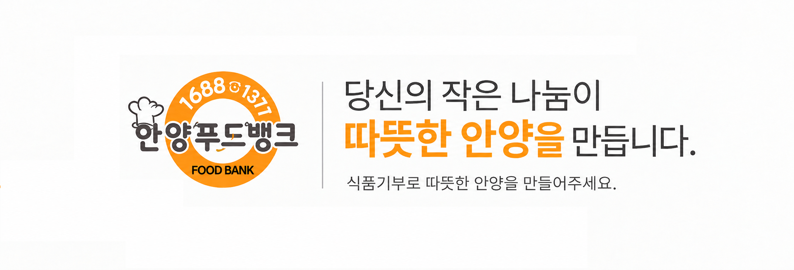

01
기부식품 제공사업
기업과 개인으로부터 기부받은 식품 및 생활용품을 필요한 이웃에게 전달합니다.

ANYANG FOOD BANK
식품기부로 따뜻한 안양을 만들어주세요.
필요한 정보를 쉽고 빠르게 확인하실 수 있습니다.
안양 푸드뱅크는 기부받은 식품과 생활용품을 도움이 필요한 이웃에게 전달하여 지역사회 나눔문화 확산에 함께하고 있습니다.
소중한 기부가 필요한 곳에 전달될 수 있도록 지역사회와 함께 지속적인 나눔 활동을 이어가겠습니다.
안양 푸드뱅크의 주요 나눔 활동을 소개합니다.
기업과 개인으로부터 기부받은 식품 및 생활용품을 필요한 이웃에게 전달합니다.
지역 내 취약계층의 안정적인 생활을 지원하기 위한 나눔사업을 운영합니다.
지역 기관·기업·자원봉사자와 함께 다양한 나눔 활동을 진행합니다.
식품, 생활용품 등 다양한 방법으로 안양 푸드뱅크와 함께하실 수 있습니다.
따뜻한 나눔의 현장에 함께해 주세요.
기부물품 정리, 배분 지원 등 다양한 활동에 참여할 수 있습니다.
봉사를 통해 이웃과 나눔의 가치를 함께 만들어갑니다.
참여를 원하시는 경우 안양 푸드뱅크로 문의해 주세요.
공지사항과 활동소식을 전해드립니다.
다음 단계에서 Google Sheets와 연결하여 공지사항을 자동으로 표시할 예정입니다.
안양 푸드뱅크의 다양한 활동을 홈페이지에서 만나보실 수 있습니다.
안양 푸드뱅크를 찾아오시는 길입니다.
지도는 이후 단계에서 실제 위치와 연결하겠습니다.